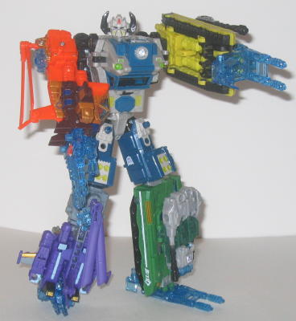
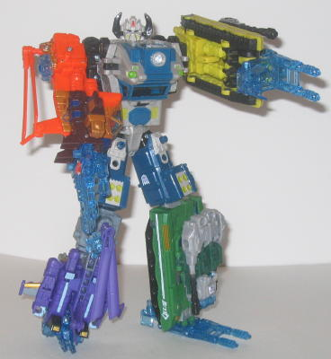

Difficulty of Transformation : Hard
Rating : 8.8
Barricade, the leader
of the Energon Combaticons, is a mobile artillery truck in his vehicle
mode. Overall, this mode is pretty good. There's a good amount of mold
and paint detailing which really give the vehicle a tough, no-nonsense
look to it. No really bright main colors on Barricade; although his dull
greenish blue, black, and gray color scheme may not exactly be the first
to attract your eye, it fits for a military truck. It's also a homage to
G1 Onslaught, the leader of his own combiner team of Combaticons, who had
a similar color scheme. There are a few paint apps here and there to break
up the dullness, though, like some of the light yellowish green used for
the molded-in missiles in the missile launcher (sorry, they don't fire)
and the lime green used for the headlights. Barricade also has a see-through
drivers' cockpit, though there aren't any seats molded on the inside or
anything. His missile launcher can also swivel around 360 degrees-- it's
made up of the legs and waist of the robot mode, which I think is ingenious.
The only problem I have with this mode is a somewhat major one, however;
the robot head is clearly visible in the midsection of the vehicle. You're
supposed to try to hide it somewhat by facing the head towards the front,
but it's still pretty obvious Barricade's head is just hangin' out in that
hollow middle section of the vehicle mode. But besides that little eyesore,
the rest of this mode is great. Barricade's blue Powerlinx symbol is on
the front hood of this mode, and the Decepticon spark crystal (upside down
in this mode, but right side up in the gestalt form) is on the lower part
of the front bumper.
I LOVE Barricade's robot
mode. He's got such a sturdy, serious look to him-- which is, again, appropriate
for a 'bot with an alt mode of an artillery truck. His arms are thick and
bulky (but not TOO bulky), with wrist armor guards to give his punches
that extra... er... punch. His chest and leg design is also a bit of a
homage to G1 Onslaught, who had an almost identical chest design and a
similar blocky leg design. Though it certainly has been spiced up a bit
for Barricade-- I really like all the mold detailing of wires & such
on his lower chest, and I can't help but notice how the vent in the middle
looks a lot like the mouth on the gestalt form, Bruticus Maximus', head.
But what I especially like is the design of his robot head-- it looks like
he has headphones on, a microphone mouthpiece, and a visor-- like he has
instant communication with any of his fellow Combaticons on the field.
Not only does this give Barricade even more of a serious demeanor, but
it tells us the attitude of the whole Combaticon team as well-- that they're
a no-nonsense, ready-to-go team. I mean, that's great characterization
in the sculpt, right there. Barricade does have a bit of a backpack made
up of the front third of his vehicle mode, however. But it doesn't really
stick out too badly-- with a little imagination, it can indeed look just
like he has a big military pack on his back to carry stuff-- and it doesn't
get in the way of articulation, so I don't mind it that much. And speaking
of articulation, Barricade's got tons of it; he can move at virtually point
you can reasonably expect on a deluxe figure, and his joints are nice and
tight-- certainly a plus for any Transformer, but especially if it forms
the torso for a gestalt, since it has to deal with extra weight in that
configuration.
Barricade is a fantastic
Transformer all by himself, with his only major flaws being that his head
is visible in vehicle mode, and he has no real weapons. But as a gestalt,
that makes his design all the more impressive. Highly recommended even
if you don't want to get the rest of the parts to make Bruticus Maximus.
 Bruticus
Maximus (Combination of Barricade, Blackout, Stormcloud, Blight, and Kickback)
Bruticus
Maximus (Combination of Barricade, Blackout, Stormcloud, Blight, and Kickback)

Difficulty of Transformation
: Hard
Rating
: 8.8
Bruticus Maximus is a
pretty darned nice gestalt, with only a few rather minor problems, so let's
get those downsides out of the way first. One is that even though the
Stormcloud
/
Blackout
mold forms a pretty solid arm or leg, you can see the robot fists and legs
hanging off the sides rather easily, and the propellers do swing around
a little bit when you move Bruticus, which can get a little annoying. The
Energon weapons attached to those molds can also come loose from their
pegs a tad easier than I'd like. Also, Bruticus' chest sticks out a bit
TOO far from his head, and makes him look a little misproportioned up there,
especially when compared to his relatively skinny waist. The Decepticon
insignia on the top of his chest is also, oddly enough, upside down in
this mode. I... have no idea why, but it looks kinda goofy. And color-scheme
wise, Stormcloud's orange clashes a bit with Bruticus' otherwise dull colors.
Though when Stormcloud is removed, all the other colors combine reasonably
well into a whole, as they give Bruticus a more serious, military look
to him-- which, of course, is what he should look like. Alright, now for
the good stuff! First off, Bruticus' articulation is EXCELLENT for a gestalt--
he can move at the head, waist, hips (at two points), knees (at two points),
and shoulders (at two points). And, since he's not backheavy or anything
like that, you can get a good number of poses out of him, which is quite
a feat for a 5-member gestalt. The
Kickback
/
Blight
mold also is an excellent arm or leg, and pretty solid, too. Bruticus is
also the only Energon gestalt to have real hands-- a five-fingered one
if you're using the Stormcloud/Blackout mold, or a three-fingered one if
you're using the Kickback/Blight mold. The fingers can't really move individually,
but that'd be pretty hard to do considering those same parts also become
a foot AND a weapon in the members' individual robot modes. The Energon
weapon used as a foot on the Stormcloud/Blackout mold is the only configuration
that's a bit weak, as Bruticus then has two toes in the front and two toes
in the BACK of his foot, but that's the only configuration that's not rock
solid. The Barricade mold also makes an excellent main body, with every
part staying together very well under the added weight. Again, my only
complaint there is that the chest is too big. The head itself is detailed
REALLY well, with a gas-mask-like face and bull-like horns. All in all,
Bruticus Maximus looks pretty fearsome.
Bruticus Maximus is
easily the best of the Energon gestalts. He has a few minor problems, such
as the overly large chest and the oddity of having the Stormcloud/Blackout
mold as a foot, but these are easily overshadowed by his awesomeness. Recommended.
No Stats
Reviews by Beastbot